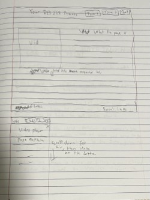

Hierarchy Assignment
Inspo Assignment
About Assignment
Entry
CSS Basics
Blog
Box Model

I don't think there's much to say about this, since it's just some links and images in a list so far. I haven't personalized it at all, so as of now it's pretty boring and uninteresting compared to how it would probably be later.
This time, I tried not to do something too complicated, since I don't really think it would fit with how I set up the website. All I really did was center everything, put some different background colors in, and add in some jump links since you'd need to scroll down a lot to get through everything here. I didn't have too much trouble with it overall, and in general I think it does look better than it did previously. The navigation itself isn't much different than before though, since it's still the same thing where you scroll down and click on links you see along the way. Some things that could use improvement are that the jump links don't behave like they should when hovering over them, and the backgrounds look pretty empty, even if they are colored in.